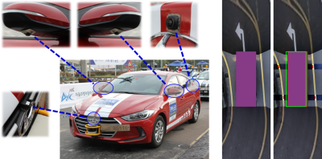

|
|
Jungwon Kang, Ph.D.
Autonomous Navigation Researcher,
Thales Canada, Transportation Solutions.
Email: kctown99 [at] gmail.com
[CV] [Google Scholar] [LinkedIn]
|
Research Interest
|
I am a highly motivated robotic vision developer.
My major interest is perception, localization and mapping for autonomous systems (mobile robot, drone, car, train).
With my solid knowledge in computer vision, machine learning, deep learning, simultaneous localization and mapping (SLAM), sensors (camera, LiDAR, radar, IMU, UWB), and robotic systems,
I have successfully conducted many robotic projects over more than 10 years.
|
Education
|
I got all the degrees in Electrical Engineering. Each title of theses is:
- MS Thesis (Advised by Prof. Myung Jin Chung)
SLAM for a Mobile Robot Using Sensor Fusion of Laser Range Finder and Omni-Directional Vision Sensor
- PhD Thesis (Advised by Prof. Myung Jin Chung and Prof. Dong-Jo Park)
Online Motion Segmentation through Multi-Temporal Section Motion Analysis in Dynamic Scenes [thesis & result videos]
|
Project & Research
LiDAR-assisted Visual SLAM for Mobile Mapping System
|
|
- Objective: Development of range-augmented panoramic visual SLAM for mobile mapping system with panoramic camera and tilted LiDAR
- Period: Apr. 2020 - Sept. 2021.
- Sponsor: Teledyne Optech, NSERC
- Keywords: Visual SLAM, Panoramic Camera, Tilted LiDAR
- Video: [result]
- Related paper: J. Kang, et al., "RPV-SLAM: Range-augmented Panoramic Visual SLAM for Mobile Mapping System with Panoramic Camera and Tilted LiDAR," International Conference on Advanced Robotics (ICAR), 2021. [link to IEEE xplore]
|
UWB-aided UAV Positioning system for Metric Infrastructure Inspection
|
|
- Objective: Development of Ultra-Wideband Aided UAV Positioning System for Metric Infrastructure Inspection
- Period: Mar. 2017 - Mar. 2019.
- Sponsor: Industrial SkyWorks (renamed to Qii.AI), CGQ, Mitacs
- Keywords: TimeDomain PulsOn 440 Ultra-Wideband sensors, DJI M100, Smoothing, Multilateration
- Video: [presentation]
- Related paper: J. Kang, et al., "Ultra-Wideband Aided UAV Positioning Using Incremental Smoothing with Ranges and Multilateration," IEEE/RSJ IROS, 2020. [link to IEEE xplore]
|
Vision-based Path Extraction for Autonomous Train
|
|
- Objective: Development of AI-based path extraction algorithm for autonomous train
- Period: Feb. 2019 - Dec. 2021.
- Sponsor: Thales, OCE
- Keywords: Deep neural network, Multi-task network
- Video: [result]
- Related paper: J. Kang*, M. Ghorbanalivakili* (*: equal contribution), et al., "TPE-Net: Track Point Extraction and Association Network for Rail Path Proposal Generation," submitted to IEEE ICRA, 2023.
|
Indoor Robot Navigation
|
|
Coverage path planning for a cleaning robot
- Objective: Development of a path planning algorithm for a cleaning robot in order to explore all locations in a given region
- Period: Mar. 2006 - Sept. 2006.
- Sponsor: SAMSUNG Advanced Institute of Technology (SAIT)
- Keywords: Coverage path planning, Cell decomposition
- Video: [result]
- Related paper: J. Kang, et al., "Path Planning for Complete and Efficient Coverage Operation of Mobile Robots,"
IEEE International Conference on Mechatronics and Automation, pp. 2126-2131, Aug. 2007. [pdf]
|
|
|
Ceiling vision-based navigation of a service robot
- Objective: Development of a ceiling vision-based algorithm for autonomous navigation of a service robot in large indoor environments, where the ceiling is almost textureless, making it hard to detect features in visible-ray domain.
*I joined in this project as an intern scholar at the robotics institute in Carnegie Mellon University.
I mainly worked with Dr. Seok Won Bang, and also advised by Prof. Christopher G. Atkeson.
- Period: Jan. 2009 - Sept. 2009.
- Sponsor: Korea Institute of Robots and Convergence (KIRO)
- Keywords: Hybrid visual features (artificial IR-based features + corners & blobs in visible-ray domain), Monocular visual SLAM, Autonomous navigation
- Video: [hybrid visual feature sensing system][3D feature map building][localization][navigation]
- Related paper: J. Kang, et al., "Monocular Vision Based Localization System using Hybrid Features from Ceiling Images for Robot Navigation in an Indoor Environment," Journal of Korea Robotics Society, vol. 6, no. 3, pp. 197-209, Sep 2011. [pdf]
|
Outdoor Mapping
|
|
Real-time dense stereo matching
- Objective: Development of a real-time dense stereo matching algorithm
- Period: Jun. 2007 - Dec. 2008.
- Keywords: Template-based matching, NVIDIA Tesla GPU
- Video: [result]
- Related paper: J. Kang and M. J. Chung, "Real-Time Dense Stereo Matching using Adaptive Support Window for Robot Navigation in an Environment with Large Depth Variation," International Conference on Ubiquitous Robots and Ambient Intelligence, Nov. 2010.
|
|
|
Stereo vision-based visual odometry
- Objective: Development of stereo vision-based visual odometry algorithm
- Period: Nov. 2009 - Feb. 2010.
- Keywords: Camera 6D pose estimation, 3D-2D matching
- Video: [result]
- Related paper: J. Kang and M. J. Chung, "Robust Real-Time Stereo Camera 6D Pose Estimation for Robot Navigation," IEEK Conference, Nov. 2010.
|
|
|
3D world modeling using stereo vision
- Objective: 3D world modeling using stereo camera (installed at the front of a vehicle) and GPS/IMU
- Period: Mar. 2010 - Dec. 2010.
- Keywords: Wide-baseline(0.5m) stereo camera, GPS/IMU-based pose estimation
- Video: [result]
- Related paper: S. Kim, J. Kang, et al., "Stereo Vision based 3D World Modeling for Intelligent Vehicle Navigation," International Conference on Ubiquitous Robots and Ambient Intelligence, Nov. 2010.
|
|
|
3D world modeling using camera-combined LIDARs
- Objective: 3D world modeling using camera-combined LIDARs (installed at each side of a vehicle) and GPS/IMU
- Period: Jan. 2011 - Dec. 2011.
- Keywords: SICK LMS291, GPS/IMU-based pose estimation
- Video: [result]
- Related paper: S. Kim, J. Kang, et al., "The Development of Sensor System and 3D World Modeling for Autonomous Vehicle," Journal of Institute of Control, Robotics and Systems, vol. 17, no. 6, pp. 531-538, 2011.
|
|
|
Stereo vision-based traversable region detection for navigation
- Objective: Stereo vision-based perception of free space and obstacles for robot navigation
- Period: Jan. 2011 - Sept. 2011.
- Keywords: Wide-baseline(0.5m) stereo camera, Probabilistic Voxel-like map, Traversability analysis
- Related paper: J. Kang and M. J. Chung, "Stereo-Vision Based Free Space and Obstacle Detection with Structural and Traversability Analysis Using Probabilistic Volume Polar Grid Map," IEEE International Conference on Robotics, Automation and Mechatronics, Sept. 2011. [pdf]
|
|
LIDAR-based traversable region detection for navigation
- Objective: LIDAR-based traverability analysis in a bush environment, where total three SICK LMS291 were installed at the front and each side of a vehicle.
- Period: Oct. 2013 - Oct. 2014.
- Keywords: SICK LMS291, PCA-based point distribution analysis
- Video: [result]
|
Autonomous Vehicle Navigation
|
Monocular vision-based real-time drivable region detection
- Description: Real-time drivable region detection using Gentleboost classifier for image patch grid classification
- Period: Jun. 2016 - Jul. 2016.
- Keywords: Image patch grid, Gentleboost
- Video: [result 1] [result 2]
|

|
Lane keeping assistor using AVM images
- Description: Steering direction computation for lane keeping using AVM images
- Period: Sept. 2016.
- Keywords: Lane detection, Lane keeping, AVM image
- Video: [result]
|
|
|
Vehicle localization using AVM images
- Description: Vehicle localization by matching between AVM images and a lane map
- Period: Sept. 2016 - Oct. 2016.
- Keywords: Lane map, Monte-carlo localization, ICP(Iterative Closest Point), AVM image
- Video: [result]
|
Mobile Robot Development
|
|
Assistive wheelchair-type mobile robots for the disabled in a factory environment
- Objective: Development of a series(type1, 2 & 3) of wheelchair-type mobile robots for helping the disabled to work in a factory
- Period: Mar. 2004 - Feb. 2008.
- Sponsor: National Research Foundation of Korea (Former name: Korea Science and Engineering Foundation)
- Keywords: Assistive mobile robot, Wheelchair, Mecanum wheel, ATmega128
- Videos: [robot-type1] [robot-type2] [robot-type3]
- Media coverage: [YTN Science+, Robot Technology (Aug. 10, 2006)] [EBS DocuPrime, Wonderful Science (May 22, 2008)]
- Related paper: J. Kang, et al., "Assistive Mobile Robot Systems helping the Disabled Workers in a Factory Environment,"
International Journal of Assistive Robotics and Mechatronics, vol. 9, no. 2, pp. 42-52, June 2008. [pdf]
|
Robot Arm Control
|
|
Trajectory generation for a tool center point of a robot arm
- Objective: Implementing a library for a robot arm
- Period: June 2004 - Dec. 2004.
- Sponsor: SAMSUNG Heavy Industries
- Keywords: Fedora-based Hancom LINUX combined with RTLinux Pro v1.0 of FSM Labs
|
Last updated: Oct 1, 2022
|
|
{kind=link}
{kind=link}
{kind=link}
{kind=link}
{kind=link}
{kind=link}
{kind=link}
{kind=link}
{kind=link}
{kind=link}
{kind=link}
{kind=link}
{kind=link}
{kind=link}
{kind=link}
{kind=link}
{kind=link}